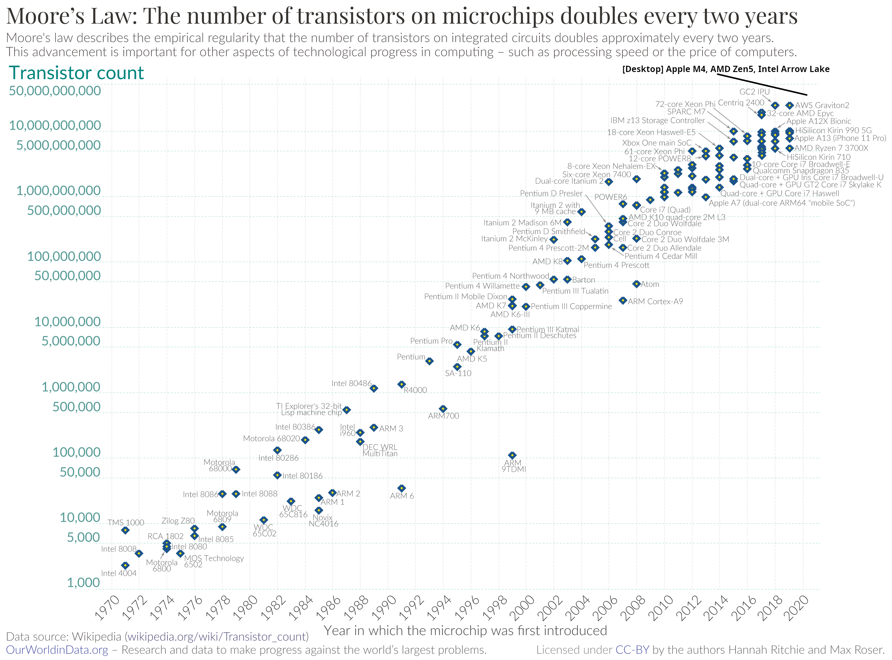

<!doctype html>
<html>
  <head>
    <meta charset="utf-8">
    <meta name="viewport" content="width=device-width, initial-scale=1.0, maximum-scale=1.0, user-scalable=no">

    <title>Performance Is Not a Number: Avoiding Microbenchmarking Pitfalls</title>

    <link rel="stylesheet" href="reveal.js/css/reveal.css">
    <link rel="stylesheet" href="reveal.js/css/theme/league.css" id="theme">
    <link rel="stylesheet" href="extensions/plugin/line-numbers/line-numbers.css">
    <link rel="stylesheet" href="extensions/css/highlight-styles/zenburn.css">
    <link rel="stylesheet" href="extensions/css/custom.css">

    <style>
      .reveal h1, .reveal h2, .reveal h3, .reveal h4, .reveal h5 { text-transform: none; }
    </style>

    <script>
      var link = document.createElement( 'link' );
      link.rel = 'stylesheet';
      link.type = 'text/css';
      link.href = window.location.search.match( /print-pdf/gi ) ? 'reveal.js/css/print/pdf.css' : 'reveal.js/css/print/paper.css';
      document.getElementsByTagName( 'head' )[0].appendChild( link );

      function set_address(self, remote, local) {
        if (window.location.search.match("local")) {
          self.href = local;
        } else {
          self.href = remote;
        }
      }
    </script>

    <meta name="apple-mobile-web-app-capable" content="yes">
    <meta name="apple-mobile-web-app-status-bar-style" content="black-translucent">
  </head>

  <body>
    <div class="reveal">
      <div class="slides">
          <script type="text/template">
          </script>
          </section>

          <section data-markdown=""
                   data-separator="^====+$"
                   data-separator-vertical="^----+$">
          <script type="text/template">
<!-- .element: data-background-image="images/title.png" data-background-size="100%" -->
<br />&nbsp;
<br />&nbsp;
<br />&nbsp;


----

### Performance?
<!-- .element: style="text-align:left" -->

<table>
  <tr>
  <td>
  <pre>
(~) Frequency
 - Heat
   - Power Limits
   - Leakage
   - 'Dark Silicon'
 - 1 cycle (5Ghz): 0.20ns&nbsp;
  </pre>
  <pre>
(⬆️) Number of transistors
 - (⬆️) Cores
 - (⬆️) IPC
   - L1 cache:     0.50ns
   - L2 cache:     3.00ns
   - L3 cache:    10.00ns
   - Main memory: 70.00ns
   - Branch miss:  3.00ns
  </pre>
  </td>
  <td>
    
  </td>
</tr>
</table>

----

#### Always Measure?!
<!-- .element: style="text-align:left" -->


```cpp
0. performance requirements

1. measuring/profiling
  - end-2-end, production like enviornment, continous integration

  - optimizations
    - SIMD, SWAR, DoD, constexpr, branchless, par, PGO, ...

  - microbenchmarking <- this talk
    - understanding
    - edge-cases/tails
    - documentation
    - testing


  -

  - microbenchmarking (understanding, edge-cases, tails, testing) <- this talk!

  end-2-end production like enviornment
    - profile/measure (continuous integration)
      - microbenchmarking (understanding, edge-cases, tails, testing) <- this talk!
    - verication
    |
   - |
    | yes (push micro-benchmarkin (analysis/tests/fix))
```

> starting from microbenchmarking
> claiming performance without measurments
>

- dont' start from micro-optimizations without end-2-end
-  if you can'affort the env (expensive)

    best other thing

----

[bootom-up]

----
Profiling answers: “Where should I optimize?”
Micro-benchmarking answers: “How fast can this be under ideal conditions?”
Start: Observe overall system performance
 ├─> Step 1: High-Level Profiling (Top-Down / Hot-Spot)
 │       ├─ Identify **slow areas or functions** in the program
 │       ├─ Tools: Hot-spot profiling (bottom-up), top-down call profiling
 │       └─ Goal: Narrow down **suspected bottlenecks**
 │
 ├─> Step 2: Drill Down into Critical Components
 │       ├─ Use **micro-benchmarking** on isolated functions or algorithms
 │       ├─ Compare alternative implementations
 │       ├─ Measure actual cycles, latency, throughput
 │       └─ Goal: Find **which specific implementation is optimal**
 │
 ├─> Step 3: Tune & Optimize
 │       ├─ Apply code-level or algorithmic improvements
 │       ├─ Optionally use **hardware-aware analysis** (TDAM, perf counters)
 │       └─ Goal: Address low-level inefficiencies (cache, pipeline stalls)
 │
 ├─> Step 4: Verify at High Level
 │       ├─ Re-run **high-level profiling** after optimization
 │       ├─ Check that changes translate into **real application-level gains**
 │       └─ Goal: Ensure improvements are meaningful for overall performance
 │
 └─> Repeat as Needed
         ├─ If new bottlenecks appear, go back to Step 2
         └─ Iterate until performance goals are met

#### [linux-perf](https://perf.wiki.kernel.org)
<!-- .element: style="text-align:left" -->

```cpp
import prof; // https://github.com/qlibs/prof

int main() {
  prof::linux_perf profiler{"/dev/shm/perf"};

  profiler.start();
  // ...
  profiler.stop();
}
```
<!-- .element: style="text-align:left" -->

```sh
perf stat --control=fifo:/dev/shm/perf --delay=-1 ./app
```

<!-- .element: style="text-align:left" -->

----

#### [Top down Microarchitecture Analysis Method](https://rcs.uwaterloo.ca/~ali/cs854-f23/papers/topdown.pdf)
<!-- .element: style="text-align:left" -->

```sh
perf stat --topdown --td-level 1
  --control=fifo:/dev/shm/perf --delay=-1 ./app
```
<!-- .element: style="text-align:left" -->

```
Expected Range

  Category         Desktop Server    HPC
  ---------------- ------- ------ ------
  Retiring          20–50% 10–30% 30–70%
  Back-End Bound    20–40% 20–60% 20–40%
  Front-End Bound    5–10% 10–25%  5–10%
  Bad Speculation    5–10%  5–10%   1–5%

(source: Intel)
```


----

#### [llvm-xray](https://llvm.org/docs/XRay.html)
<!-- .element: style="text-align:left" -->

```cpp
function(int, int):
  // nop word ptr [rax + rax + 512]    // -fxray-instrument
  lea eax, [rdi+rsi]
  ret
  // nop word ptr cs:[rax + rax + 512] // -fxray-instrument
```

```cpp
int main() {
  auto handler = [](int32_t func_id, XRayEntryType entry) {
    if (entry == XRayEntryType::ENTRY) {
      profiler.start();
    } else {
      profiler.stop();
    }
  };
  __xray_set_handler(+handler);
  __xray_patch(); // nop -> jmp &handler [code patching]
}
```
<!-- .element: class="fragment" data-fragment-index="1" style="text-align:left" -->

```sh
clang++ -fxray-instrument -fxray-function-list=function.txt
```

----

#### https://github.com/qlibs/prof/blob/main/.github/workflows/Dockerfile
<!-- .element: style="text-align:left" -->

##### linux-perf - https://perf.wiki.kernel.org
<!-- .element: style="text-align:left; margin: 0 0;" -->
##### dtrace - https://perf.wiki.kernel.org
<!-- .element: style="text-align:left; margin: 0 0;" -->
##### intel-vtune - https://www.intel.com/content/www/us/en/docs/vtune-profiler
<!-- .element: style="text-align:left; margin: 0 0;" -->
##### amd-uprof - https://www.amd.com/en/developer/uprof.html
<!-- .element: style="text-align:left; margin: 0 0;" -->
##### toplev - https://github.com/andikleen/pmu-tools
<!-- .element: style="text-align:left; margin: 0 0;" -->
##### flamegraph - https://github.com/brendangregg/FlameGraph
<!-- .element: style="text-align:left; margin: 0 0;" -->
##### callgrind - https://valgrind.org/docs/manual/cl-manual.html
<!-- .element: style="text-align:left; margin: 0 0;" -->
##### coz - https://github.com/plasma-umass/coz
<!-- .element: style="text-align:left; margin: 0 0;" -->
##### gperftools - https://github.com/gperftools/gperftools
<!-- .element: style="text-align:left; margin: 0 0;" -->
##### likwid - https://github.com/RRZE-HPC/likwid
<!-- .element: style="text-align:left; margin: 0 0;" -->
##### tracy - https://github.com/wolfpld/tracy
<!-- .element: style="text-align:left; margin: 0 0;" -->
##### magic-trace - https://github.com/janestreet/magic-trace
<!-- .element: style="text-align:left; margin: 0 0;" -->
##### ...
<!-- .element: style="text-align:left; margin: 0 0;" -->
##### [cpp] prof - https://github.com/qlibs/prof (linux-perf, intel-vtune, amd-uprof, callgrind, ...)
<!-- .element: style="text-align:left" -->
<!-- .element: style="text-align:left; margin: 0 0;" -->

----

### hot spot profiling [bottom-up] can get thus far
<!-- .element: style="text-align:left" -->
#### - IO, allocations, ...
<!-- .element: style="text-align:left" -->

```cpp
```


#### Modern processors execute nearly as many instructions per cycle as you can supply*
<!-- .element:  style="text-align:left" -->
<!-- .element: style="text-align:left" -->
##### - Reduce overall instruction count (IPC you aslo have the max dispatch width)
<!-- .element: style="text-align:left" -->

##### - I/O, branch, memory
<!-- .element: style="text-align:left" -->

<!-- .slide: data-background="black" -->

----

#### Microbenchmarking
<!-- .element: style="text-align:left" -->

```
auto bench(auto fn, auto... ts) {
  const auto start = time();
  fn(ts...);
  const auto end = time();
  return end - start;
}
```

##### Faster iterations / Isolation / Understanding / Tuning / Scientific
<!-- .element: style="text-align:left" -->

----

#### Performance Is Not a Number!
<!-- .element: style="text-align:left" -->

```cpp
[[gnu::optimize("O3")]] auto fizz_buzz(int n) {
       if (n % 15 == 0) { return "FizzBuzz"; }
  else if (n % 3  == 0) { return "Fizz";     }
  else if (n % 5  == 0) { return "Buzz";     }
  return "Unknown";
}
```
```cpp
fizz_buzz                     100.00ns
```
<!-- .element: class="fragment" data-fragment-index="1" style="text-align:left" -->

```
fizz_buzz                       0.00ns
fizz_buzz                     100.00ns
fizz_buzz                     500.00ns
fizz_buzz(15)                  31.00ns
fizz_buzz(3)                   41.00ns
fizz_buzz(5)                   87.00ns
fizz_buzz(0)                  121.00ns
fizz_buzz(sequence{15,3,5})    33.00ns
fizz_buzz(sequence{3,15,5})    33.00ns
fizz_buzz(sequence{3,15,5})    33.00ns
fizz_buzz(sequence{5,3,5})     33.00ns
fizz_buzz(uniform{1,15})      137.00ns
...
```
<!-- .element: class="fragment" data-fragment-index="2" style="text-align:left" -->

----

### Performance Is Not a Number!
<!-- .element: style="text-align:left" -->

<table>
<tr>
  <td>
 <pre><code>
int main(int, const char**) {&nbsp;
  bench(fizz_buzz);
}
 </code></pre>
  </td>
  <td>
  
  </td>
  </tr>
</table>

###### `./fizz_buzz`

----

#### Performance Is Not a Number!
<!-- .element: style="text-align:left" -->


##### Linux 6.x - https://makelinux.github.io/kernel/map

----

### Performance Is Not a Number!
<!-- .element: style="text-align:left" -->

<table>
<tr>
  <td>
 <pre><code>
fizz_buzz(int):
  imul    eax, edi, -286331153
  mov     edx, OFFSET FLAT:.LC1&nbsp;
  add     eax, 143165576
  cmp     eax, 286331152
  ...
  jbe     .L13
  ...
  mov     rax, rdx
  ret
 </code></pre>
  </td>
  <td>
  
  </td>
  </tr>
</table>

###### `fizz_buzz(n);`

----

#### Performance Is Not a Number!
<!-- .element: style="text-align:left" -->


##### AMD Zen5 - https://chipsandcheese.com

----

### Avoiding Microbenchmarking Pitfalls

----

#### Disclaimer
<!-- .element: style="text-align:left" -->

#### - Focused on [x86-64-linux-gnu](https://en.wikipedia.org/wiki/X86-64)
<!-- .element: style="text-align:left" -->

#### - Powered by https://github.com/qlibs/perf 
<!-- .element: style="text-align:left" -->

```
c++23, linux/perf, llvm/mca, gnuplot/sixel
```
<!-- .element: style="margin: 0px 30px; width: 60%; " -->

-----

#### UEFI - https://en.wikipedia.org/wiki/UEFI (ring 0)
<!-- .element: style="text-align:left" -->

```cpp
int efi_main(void*, perf::uefi::sys* sys) { // no kernel
  perf::cpu::core::disable(2);              // wrmsr
  perf::cpu::cache::disable();              // wbinvd

  perf::runner bench(perf::bench::latency{});

  auto div = [] [[gnu::optimize("O3")]] (int a, int b) { 
    return a / b; 
  };

  bench(div, unpredictable<int>, unpredictable<int>);

  perf::report(
    bench[perf::stat::tsc, perf::stat::cycles], // rdtsc, rdpmc
    min, median, p90, p99
  );

  for (;;);
}
```

----

#### UEFI - https://en.wikipedia.org/wiki/UEFI (ring 0)
<!-- .element: style="text-align:left" -->

```cpp
$CXX -DPERF_UEFI  \
  -target x86_64  \
  -ffreestanding  \
  -fno-exceptions \
  -fno-rtti       \
  ...
```

```
$LD /entry:efi_main \
    /out:bench.efi  \
    ...
```

---

```cpp
qemu-system-x86_64 ... bench.efi # test
sudo reboot                      # boot / USB
```

-----

#### Linux
<!-- .element: style="text-align:left" -->

```sh
# Disable CPU Frequency Scaling
sudo cpupower frequency-set --governor performance

# Disable Processor Boosting
echo 0 | sudo tee /sys/devices/system/cpu/cpufreq/boost

# Disable Turbo Mode
echo 1 > /sys/devices/system/cpu/intel_pstate/no_turbo

# Disable Hyperthreading/SMT
echo off | sudo tee /sys/devices/system/cpu/smt/control

# Disable Address Space Randomization
echo 0 > /proc/sys/kernel/randomize_va_space
```

```sh
perf/scripts/tune.sh # or pyperf system tune
```
<!-- .element: style="text-align:left" -->

----

#### Linux / Kernel Mode Task-Isolation - https://lwn.net/Articles/816298
<!-- .element: style="text-align:left" -->

```sh
isolcpus=<cpu number>,...,<cpu number>
```
<!-- .element: style="text-align:left" -->


```
cat /sys/devices/system/cpu/isolated # <cpu number>,...,<cpu number>
```

----

#### Linux / Affinity, Priority
<!-- .element: style="text-align:left" -->

```sh
perf::thread::set_affinity(thread::self, 2u);  // taskset -c 2 ./bench
perf::thread::set_priority(thread::self, max); // nice -n -20 ./bench
```

##### cores: 0, 1 usually used by the kernel
<!-- .element: style="text-align:left" -->

----

memory
  What Every Programmer Should Know About Memory - https://www.akkadia.org/drepper/cpumemory.pdf
  https://github.com/ccurtsinger/stabilizer
##### Statistically Sound Performance Evaluation - https://people.cs.umass.edu/~emery/pubs/stabilizer-asplos13.pdf
<!-- .element: style="text-align:left" -->


```cpp
template<class T = std::size_t, class TAllocator = std::allocator<T>>
inline constexpr auto pollute(const std::size_t size)
  requires (requires { T{}; } or requires { T(size); }) {
  verify(size > 0u);
  std::list<T, TAllocator> data{};
  auto n = size;
  while (n--) {
    if constexpr (requires { T(n); }) {
      data.push_back(T(n));
    } else {
      data.push_back(T{});
    }
  }
}
```

```cpp
inline constexpr auto pre_fault =
  [](std::span<std::byte> data, const std::size_t page_size = info::sys::page_size()) {
    for (auto i = 0u; i < data.size(); i += page_size) {
      data[i] = {};
    }
  };
```

```cpp
numa
huge pages
```

----

#### x86-64
<!-- .element: style="text-align:left" -->

```cpp
auto bench(auto fn, auto... ts) {
  // cpu = {};
  // cpu<branch>(ip) = 1;
  // cpu<cache>(L1, addr) = 1; // clflush
  // cpu<cache>(L2) = false;
  // cpu<cache>(L3) = false;
  // cpu<port>(Adl) = true;
  // ...

  auto start = time();
  fn(ts...);
  auto end = time();

  return end - start;
}
```

#### Difference between fast cpu and cpu which is easy to make fast and providing tools to do so (intel)
<!-- .element: style="text-align:left" -->

----

#### cpu/info
<!-- .element: style="text-align:left" -->

```cpp
perf::info::spec spec{
    {"perf",  perf::info::version()},
    {"time",  std::chrono::system_clock::now()},
    {"sys",   perf::info::sys::triple()},
    {"cxx",   perf::info::compiler()},
    {"cpu",   perf::info::cpu()},
    {"cache", perf::info::memory::cache()},
    // ...
};
```
```cpp
perf::log(spec);
```

```sh
name  info
----- -----------------------------------------------------------------
perf  0.0.1
time  2025-09-15 11:30:00
sys   x86_64-pc-linux-gnu
cxx   gcc-15.0.0
cpu   12th Gen Intel(R) Core(TM) i7-12650 (alderlake:6.154.3) / 2.67Ghz
cache iL1: 32Kb (64b), dL1: 48Kb/12 (64b)
...
```


----

#### [Compiler] Avoiding Microbenchmarking Pitfalls
<!-- .element: style="text-align:left" -->

----

#### [Compiler] Avoiding Microbenchmarking Pitfalls

```cpp
int main() {
  fizz_buzz(42); // 0 ns
}
```

----


```cpp
constexpr auto prevent_elision(auto&& t) {
  // simplified
  asm volatile("" :: "r,m"(t) : "memory");
}
```

----

```cpp
[[gnu::aligne]] [[gnu::optimize("O3")]] void foo() { }
[[gnu::optimize("ffast-math")] void foo();
[[gnu::target("avx2")]] void foo();
```

```cpp
int main() {
  auto fn = [] [[gnu::aligned(64u), gnu::optimize("O3"), gnu::target("avx2")]] { ... };

  auto start = time();
  perf::compiler::prevent_elision(fn(ts...));
  auto end = time();
  return end - start;
}
```

----

```cpp
template<auto Id>
constexpr auto label() {
  asm volatile goto(
    ".pushsection labels, \"aw\" \n"
    ".quad %c0, 0b \n`
    ".popsection \n"
    : : "i"(Id) : "memory"
  );
}
```

```cpp
extern "C" auto __start_labels [[gnu::section("labels")]] [[gnu::weak]];
extern "C" auto __stop_labels  [[gnu::section("labels")]] [[gnu::weak]];
std::unordered_map labels{&__start_labels, &__stop_labels};
```


```cpp
template<auto Begin = []{}, auto End = []{}>
constexpr auto is_elided(auto&& fn) -> bool {
  const auto invoke = [&] {
    code::label<Begin>();
    fn();
    code::label<End>();
  };
  prevent_elision(&decltype(invoke)::operator());
  return labels[Begin] == labels[End];
}
```

```cpp
perf::code::label<"begin">(); // begin:
perf::code::label<"end">();   // end:
assert(perf::code::labels["begin"] != perf::code::labels["end"]); // assert(&&begin != &&end)
```

```cpp
assert(perf::compiler::is_elided([] { }));
assert(perf::compiler::is_elided([] { int i{}; i++; }));
assert(not perf::compiler::is_elided([] {
 int i{};
 perf::compiler::prevent_elision(i++);
}));
```

----


### Benchmarking without underlying hw/sftw not the valuable
<!-- .slide: data-background="black" -->

----

### Latency vs. Throughput

----

#### Latency - Time it takes for a single operation to complete (ns/op)
<!-- .element: style="text-align:left" -->


##### network request / cpu -> fpga -> asic
<!-- .element: style="text-align:left" -->

----

### Latency
<!-- .element: style="text-align:left" -->

```cpp
for (auto i = 0; i < iterations; ++i) { // what is that meassuring
  start();
  fn();
  stop();
}
```

```cpp
template<std::size_t N, std::align_val_t Alignment>
[[gnu::section("latency")]] [[gnu::aligned(Alignment)]] constexpr auto latency(auto&& fn, auto&&... ts) {
  auto checksum = 0u;
  [[code::align]] for (auto i = 0u; i < N; ++i) {
    checksum ^= fn(checksum ^ ts...); // data dependency
    perf::memory::synchronize(); // required if there is a memory write
  }
  perf::compiler::prevent_elision(checksum);
}
```

- nanoBench: A Low-Overhead Tool for Running Microbenchmarks on x86 Systems - https://arxiv.org/abs/1911.03282
https://www.agner.org/optimize
- nanobench (unroll 2x - uroll 1x - link pdf) -> uops.table
#### nanoBench - https://github.com/andreas-abel/nanoBench

```cpp
template<std::size_t N>
constexpr auto unroll(auto&& fn) {
  [&]<std::size_t... Ns>(std::index_sequence<Ns...>) {
    (fn(), ...);
  }(std::make_index_sequence<N>{});
}
```

```cpp
time = unroll<N*2>(fn) - unroll<N>(fn);
```


----

Throughput - total number of operations or tasks completed in a given amount of time (op/s)
- backtest/llms
- increase throughput by decreasing latency
- cpu -> gpu/tpu


https://docs.nvidia.com/cuda/cuda-c-programming-guide/


```cpp
perf::bench::throughput::policy::seq;
perf::bench::throughput::policy::unseq;
perf::bench::throughput::policy::unroll;
perf::bench::throughput::policy::par;
perf::bench::throughput::policy::omp;
perf::bench::throughput::policy::cuda;
```

```cpp
inverse_throughput = ns(time) / operations;
```

Data distrubtion (branch prediction)
- branch_prediction


```cpp
using perf::data::unpredictable;  // not elided and not predicted
```

```cpp
{1, 3, 5}
```

```cpp
bench(to_string, perf::data::unpredictable);
// random
for (auto i = 0; i < 10; ++i) {
  bench(to_string, perf::data::unpredictable);
}
```

branch prediction state (10'000 1/0 branches learn)

----

Not benchmarking the right thing
Not benchmarking realsistc scenarios (alignment, cold, warm, threading, ...)
<!-- .slide: data-background="black" -->

----

#### Reporting
<!-- .element: style="text-align:left" -->

- Timing data is usually skewed, not symmetric
- taking mean!
      - use min, median, percentials instead
- statistical / scientifi approach
- baseline (speedup, relative)
      - mesuremnets are not following normal distrubution

----

```cpp
perf::metric::stat::min;
perf::metric::stat::max;
perf::metric::stat::mean;
perf::metric::stat::geomean;
perf::metric::stat::median;
perf::metric::stat::percentile;
perf::metric::stat::p99;
perf::metric::stat::p75;
perf::metric::stat::p50;
perf::metric::stat::p25;
perf::metric::stat::variance;
perf::metric::stat::stddev;      // degrees_of_freedom = 1
perf::metric::stat::sem;         // standard error
perf::metric::stat::mae;         // median absolute errror
perf::metric::stat::mad;         // median absolute deviation
perf::metric::stat::cv;          // coefficient of variation
perf::metric::stat::z_score;
perf::metric::stat::t_score;
```

----

```cpp
import perf;

perf::runner bench{perf::bench::latency{}};

bench(perf::bench::baseline([]{});
bench(fizz_buzz, 1);
report(bench[stat::tsc], min, median, p90, p99)
```

----

#### Plotting
<!-- .element: style="text-align:left" -->

Approaches
- jupyter notebook - https://jupyter.org (save json + analyze python)
- benchmark GUI - https://github.com/skarupke/benchmark-gui (save database + GUI)
- gnuplot/terminal (supports the server side)

----

```cpp
perf::plot::hist;
perf::plot::bar; // show error bars (show where the previous one could be slower)
perf::plot::box;
perf::plot::ecdf;
perf::plot::flamegraph;
```

```cpp
PERF_IO_PLOT_TERM='sixel'                 # terminal
PERF_IO_PLOT_TERM='dumb size 80,25'       # terminal asci
PERF_IO_PLOT_TERM='dumb size 150,25 ansi' # terminal ansi
PERF_IO_PLOT_TERM='wxt'                   # popup windows
PERF_IO_PLOT_TERM='canvas'                # html
PERF_IO_PLOT_TERM='png'                   # png
```

#### https://arewesixelyet.com
<!-- .element: style="text-align:left" -->

----

Hist - Histogram
<!-- .element: style="text-align:left" -->

----

ECDF - https://en.wikipedia.org/wiki/Empirical_distribution_function
<!-- .element: style="text-align:left" -->

----

Bar - Bar
<!-- .element: style="text-align:left" -->

----

- gnuplot charts (sixel) and (console)
- running on the server side - sixel / show console picture

----

```cpp
perf::plot::complexity (big0)
```

----

### flamegraph
<!-- .element: style="text-align:left" -->

```cpp
perf::plot::flamegraph(bench[perf::record::cycles]);
```


----

### Assuming measurements are independent
### Assuming measurements are following normal distribution
### Not using ratios, baseline (speedup, relative)
<!-- .slide: data-background="black" -->

----

### Understanding?

Approaches

```sh
perf record -g ./benchmark
```

```cpp
int main() {
  profiler profiler{};
  profiler.start();
  bench(fn);
  profiler.stop();
  // analyze
}
```

----

#### Profiling
<!-- .element: style="text-align:left" -->

```cpp
static_assert(requires {
  proifler{events...}
  profiler::is_syscall_free;
  profiler::is_mulitplexing_free;
  profiler.start();
  profiler.stop();
})
```

----

#### stat / counting
<!-- .element: style="text-align:left" -->

TSC - Time Stamp Counter

Time is discrete: clock cycle
Processors: 4 GHz (4*10^9 cycles per second)
One cycle is 0.25 nanoseconds
light: 7.5 centimeters per cycle
One byte per cycle: 4 GB/s

```tsc
rdtscp from highway
```

```cpp
perf::stat.cpu_time (wall) chrono
perf::stat.real
perf::stat.thread (clock-gettime)
perf::stat.steady (monotonic)
```

----

#### PMC - Perfomrmance mesuerning Counter / `perf list`
<!-- .element: style="text-align:left" -->

### RDPMC - Read Performance Monitoring Counters (current thread)

inline constexpr auto rdpmc = [](const std::uint64_t id) {
    std::uint64_t eax{}, edx{};
    asm volatile(
      "rdpmc" : "=a"(eax), "=d"(edx) : "c"(id)
    );
    return ((std::uint64_t>(edx)) << 32u) | static_cast<std::uint64_t>(eax);
};

----

`perf list`
```cpp
using perf::stat::cpu_clock;
using perf::stat::task_clock;
using perf::stat::page_faults;
using perf::stat::faults;
using perf::stat::major_faults;
using perf::stat::minor_faults;
using perf::stat::alignment_faults;
using perf::stat::emulation_faults;
using perf::stat::context_switches;
using perf::stat::cgroup_switches;
using perf::stat::cpu_migrations;
using perf::stat::migrations;
using perf::stat::cycles;
using perf::stat::instructions;
using perf::stat::branch_misses;
using perf::stat::bus_cycles;
using perf::stat::cache_misses;
using perf::stat::cache_references;
using perf::stat::branches;
using perf::stat::branch_instructions;
using perf::stat::stalled_cycles_backend;
using perf::stat::idle_cycles_backend;
using perf::stat::stalled_cycles_frontend;
using perf::stat::idle_cycles_frontend;
using perf::stat::llc_misses;
using perf::stat::l1_misses;
using perf::stat::l1_dcache_loads;
using perf::stat::l1_dcache_load_misses;
using perf::stat::l1_icache_loads;
using perf::stat::l1_icache_load_misses;
using perf::stat::dtlb_loads;
using perf::stat::dtlb_load_misses;
using perf::stat::itlb_loads;
using perf::stat::itlb_load_misses;
...
```

----

### Metrics
<!-- .element: style="text-align:left" -->

```
inline constexpr auto ipc = instructions / cycles; // instruction per cycle (ipc)
inline constexpr auto cpi = cycles / instructions; // // cycles per instruction (cpi, inverse of ipc)
inline constexpr auto l1_dcache_miss_rate = l1_dcache_load_misses / l1_dcache_loads;
inline constexpr auto cache_miss_rate = cache_misses / cache_references;
inline constexpr auto branch_miss_rate = branch_misses / branches;
inline constexpr auto llc_miss_rate = llc_misses / cache_references;
...
```

```cpp
perf::verify(max.ipc <= dispatch_width);
```

```cpp
inline constexpr auto l1_icache_miss_rate = l1_icache_load_misses / l1_icache_loads;
inline constexpr auto dtlb_miss_rate = dtlb_load_misses / dtlb_loads;
inline constexpr auto itlb_miss_rate = itlb_load_misses / itlb_loads;
inline constexpr auto frontend_stall_rate = stalled_cycles_frontend / cycles;
inline constexpr auto backend_stall_rate = stalled_cycles_backend / cycles;
inline constexpr auto memory_stall_ratio = stalled_cycles_backend / cycles;
inline constexpr auto total_stall_rate = (stalled_cycles_backend + stalled_cycles_frontend) / cycles;
inline constexpr auto cpu_migration_rate = cpu_migrations / cycles;
inline constexpr auto context_switch_rate = context_switches / cycles;
inline constexpr auto page_fault_rate = faults / cycles;
inline constexpr auto major_fault_rate = major_faults / cycles;
inline constexpr auto minor_fault_rate = minor_faults / cycles;
```

A Top-Down method for performance analysis

```
// leve1l
inline constexpr auto retiring = aux::retiring / aux::slots;

// level2
inline constexpr auto heavy_operations = aux::heavy_operations / aux::slots;
inline constexpr auto light_operations = retiring - heavy_operations;

// level1
inline constexpr auto bad_speculation = aux::bad_speculation / aux::slots;

// level2
inline constexpr auto branch_mispredict = aux::branch_mispredict / aux::slots;
inline constexpr auto machine_clears = bad_speculation - branch_mispredict;

inline constexpr auto frontend_bound = aux::frontend_bound / aux::slots;
inline constexpr auto fetch_latency = aux::fetch_latency / aux::slots;
inline constexpr auto fetch_bandwidth = frontend_bound - fetch_latency;

inline constexpr auto backend_bound = aux::backend_bound / aux::slots;
inline constexpr auto memory_bound = aux::memory_bound / aux::slots; // LLMs
inline constexpr auto core_bound = backend_bound - memory_bound;
```

#### Pioneered by Intel suppoerted by ARM, AMD, Apple

----

#### Record / Sampling
<!-- .element: style="text-align:left" -->

LBR  - Last Branch Record
PEBS  - Precise Event-Based Sampling / IBS (Amd)

```cpp
using perf::record::mem_loads; // cycles 3
using perf::record::mem_stores;
```

----

#### Trace / Tracing
<!-- .element: style="text-align:left" -->

IPT -  Intel Processor Trace - (intel, m4)

```cpp
using perf::trace::instructions;
using perf::trace::cycles;
```

```
invoke fn = [] {
};

log // hexdump

verify(5 == instructions);
verify(3 == instructinos);
```

----

#### Profiler
<!-- .element: style="text-align:left" -->

```cpp
perf::profiler profiler{
  perf::stat::tsc, perf::stat:cycles, perf::stat::instructions,
  perf::trace::instructions, perf::trace::cycles,
  perf::record::mem_loads, perf::record::mem_stores
};
```

```cpp
static_assert(profiler::is_syscall_free);
static_assert(profiler::is_mulitplexing_free);
```

-----

#### Analyzer - llvm-mca - https://llvm.org/docs/CommandGuide/llvm-mca.html
<!-- .element: style="text-align:left" -->

#### llvm-exegesis - https://llvm.org/docs/CommandGuide/llvm-exegesis.html
<!-- .element: style="text-align:left; margin: 0 0;" -->

osaca - https://github.com/RRZE-HPC/OSACA
uica - https://uica.uops.info

```cpp
static_assert(requires {
  analyzer{events...}
  analyzer << instructions;
})
```

```cpp
perf::mc::latency;
perf::mc::uops;
...
```

```cpp
perf::mca::timeline;
perf::mca::resource_pressure;
perf::mca::bottleneck
```

```cpp
perf::debug::source;
```

----

```cpp
auto add  = [](int a, int b) { return a + b; };
auto sub  = [](int a, int b) { return a - b; };
auto mult = [](int a, int b) { return a * b; };
auto div  = [](int a, int b) { return a / b; };
```

stat vs mca::stat
log
| mca.cycles | cycles   |
| 1          | 3 cycles |

----

```cpp
perf::annotate<perf::vsplit>(bench[mca::timeline])
```

----

#### disassemble vs trace vs sample
<!-- .element: style="text-align:left" -->

Branches that jump backward (loops) and are actually taken the first time → taken without miss.
All other branches (forward jumps that are taken) → mispredict on first encounter.

```cpp
if (foo) [[likely]] // taken (that's why you can use likely)
[[gnu::always_inline]] inline void fast_path() { std::puts("fast_path"); }
[[gnu::cold]] void slow_path() { std::puts("slow_path"); }
```

```cpp
constexpr jmp::static_branch<bool> disarmed = false;

void trigger() {
  if (not disarmed) { // { false: nop, true: jmp }
    fast_path();
  } else {
    slow_path();
  }
}
```

```cpp
trigger(): // $CXX -O3
  nop                              # code patching (nop->jmp .Ltmp1)
 .Ltmp0:                           # fast path (inlined)
  mov edi, OFFSET FLAT:.LC1
  jmp puts
 .Ltmp1:                           # slow path (cold)
  jmp slow_path() # [clone .cold]
```
```

----


```cpp
  disasm      trace    sample
1   mov
2
3
4
5
6
```

https://github.com/qlibs/jmp

----

analyze vs profile
<!-- .element: style="text-align:left" -->

  - mph /table
  - condition move
  - align to cacheline

  ```cpp
  fizz_buzz(unpredictable)/latency:
        trace.instructions record::mem_loads timeline timeline resource_pressure
  1     1                                      1
  2     2                                      1           1
  3                                                        1
  3
  4     10                                     1
  4     11
  5                                            1
  5     12
  ```

----

trace + analyze
- profiler {mem_loads, trace::instrcutions, stat::cycles};
- ipc perf ip

```cpp perf::profiler profiler{perf::trace::instructions, perf::trace::cycles}
const auto invoke = [&](auto&& fn, auto&&... ts) {
  profiler.start();
  perf::compiler::prevent_elision(fn(ts...));
  profiler.stop();
};
invoke(fizz_buzz, std::rand());
```

- show ipc per instruction

----

Not understnaindg why
<!-- .slide: data-background="black" -->

----

### Sometimes

```cpp
import prof; // https://github.com/qlibs/prof

int main() {
  prof::callgrind profiler{"profile"};

  profiler.start(); // reset
  if (trigger()) {
    // ...
    profiler.stop();
    proflier.flush(); // dump
  }
}
```

```sh
valgrind --tool=callgrind --instr-atstart=no ./app
```

----

### Debuging/Testing
<!-- .element: style="text-align:left" -->

- verify results (fatest but wrong)
- debug verify results / can be done in warmup phase

```cpp
[]<bool debug = {}>(std::vector<int>& v) {
  std::ranges::sort(v);
  if constexpr (debug) {
    assert(is_sorted(v));
  }
};
```

----

```cpp
perf::verify(instructions.size)
perf::verify(asm.instruciont == "mov")
perf::verify(asm.instruciton.count < non optimizaed)
perf::verify(as.minstruciton.count == c++optimization)
```

----

### Self-testing/tuning
<!-- .element: style="text-align:left" -->

```
perf::self::test({.verbose = true});
```

----

### Not testing results
<!-- .slide: data-background="black" -->

----

#### Document export & share results
<!-- .element: style="text-align:left" -->

- show stiesd link
- jupyter notbeeok is good
- learning
- test it perf::verify(assembly)
- continous integration
- jupyter notebook approach

#### Eport/Share (jupyter)
<!-- .element: style="text-align:left" -->
- perf::json
- code says only what works and not what doesn't
- what didn't what work
- share studies!
  - github

### [https://github.com/qlibs/perf#studies](https://github.com/qlibs/perf/discussions/4)

----

### Further readings
<!-- .element: style="text-align:left" -->

##### Intel - https://www.intel.com/content/www/us/en/developer/articles/technical/intel-sdm.html
<!-- .element: style="text-align:left; margin: 0 0;" -->
##### AMD - https://www.amd.com/content/dam/amd/en/documents
<!-- .element: style="text-align:left; margin: 0 0;" -->
##### ARM - https://developer.arm.com/documentation/ddi0487/latest
<!-- .element: style="text-align:left; margin: 0 0;" -->
##### Apple - https://developer.apple.com/documentation/apple-silicon/cpu-optimization-guide
<!-- .element: style="text-align:left; margin: 0 0;" -->

---

##### [https://github.com/qlibs/perf#resources](https://github.com/qlibs/perf?tab=readme-ov-file#User-Guide) (books, publications, guides, blogs, videos, tools, ...)
<!-- .element: style="text-align:left; margin: 0 0;" -->

          </script>
        </section>

      </div>
    </div>

    <script src="reveal.js/lib/js/head.min.js"></script>
    <script src="reveal.js/js/reveal.js"></script>

    <script>

      // Full list of configuration options available at:
      // https://github.com/hakimel/reveal.js#configuration
      Reveal.initialize({

        // Display controls in the bottom right corner
        controls: false,

        // Display a presentation progress bar
        progress: false,

        // Display the page number of the current slide
        slideNumber: 'c/t',

        // Push each slide change to the browser history
        history: true,

        // Enable keyboard shortcuts for navigation
        keyboard: true,

        // Enable the slide overview mode
        overview: false,

        // Vertical centering of slides
        center: true,

        // Enables touch navigation on devices with touch input
        touch: true,

        // Loop the presentation
        loop: false,

        // Change the presentation direction to be RTL
        rtl: false,

        // Turns fragments on and off globally
        fragments: true,

        // Flags if the presentation is running in an embedded mode,
        // i.e. contained within a limited portion of the screen
        embedded: false,

        // Flags if we should show a help overlay when the questionmark
        // key is pressed
        help: true,

        // Flags if speaker notes should be visible to all viewers
        showNotes: false,

        // Number of milliseconds between automatically proceeding to the
        // next slide, disabled when set to 0, this value can be overwritten
        // by using a data-autoslide attribute on your slides
        autoSlide: 0,

        // Stop auto-sliding after user input
        autoSlideStoppable: true,

        // Enable slide navigation via mouse wheel
        mouseWheel: false,

        // Hides the address bar on mobile devices
        hideAddressBar: true,

        // Opens links in an iframe preview overlay
        previewLinks: false,

        // Transition style
        transition: 'none', // none/fade/slide/convex/concave/zoom

        // Transition speed
        transitionSpeed: 'default', // default/fast/slow

        // Transition style for full page slide backgrounds
        backgroundTransition: 'none', // none/fade/slide/convex/concave/zoom

        // Number of slides away from the current that are visible
        viewDistance: 1,

        // Parallax background image
        parallaxBackgroundImage: '', // e.g. "'https://s3.amazonaws.com/hakim-static/reveal-js/reveal-parallax-1.jpg'"

        // Parallax background size
        parallaxBackgroundSize: '', // CSS syntax, e.g. "2100px 900px"

        // Number of pixels to move the parallax background per slide
        // - Calculated automatically unless specified
        // - Set to 0 to disable movement along an axis
        parallaxBackgroundHorizontal: null,
        parallaxBackgroundVertical: null,

        // Optional reveal.js plugins
        dependencies: [
          { src: 'reveal.js/lib/js/classList.js', condition: function() { return !document.body.classList; } },
          { src: 'reveal.js/plugin/markdown/marked.js', condition: function() { return !!document.querySelector( '[data-markdown]' ); } },
          { src: 'reveal.js/plugin/markdown/markdown.js', condition: function() { return !!document.querySelector( '[data-markdown]' ); } },
          { src: 'reveal.js/plugin/highlight/highlight.js', async: true, callback: function() { hljs.initHighlightingOnLoad(); } },
          { src: 'reveal.js/plugin/zoom-js/zoom.js', async: true },
          { src: 'reveal.js/plugin/notes/notes.js', async: true },
          { src: 'extensions/plugin/line-numbers/line-numbers.js' }
        ]
      });

      function handleClick(e) {
        if (1 >= outerHeight - innerHeight) {
          document.querySelector( '.reveal' ).style.cursor = 'none';
        } else {
          document.querySelector( '.reveal' ).style.cursor = '';
        }

        e.preventDefault();
        if(e.button === 0) Reveal.next();
        if(e.button === 2) Reveal.prev();
      }
    </script>

  </body>
</html>
